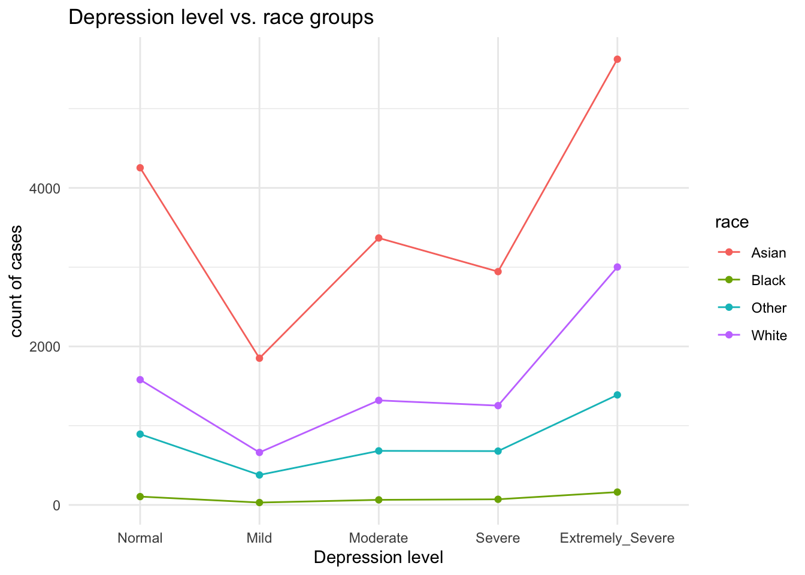
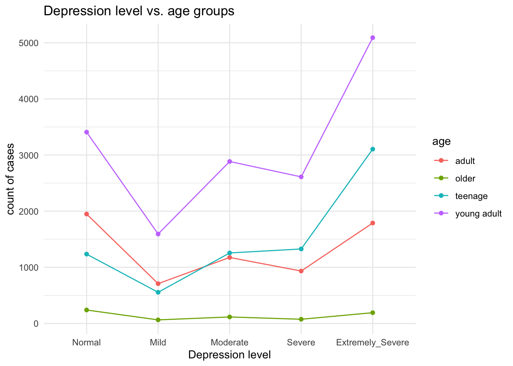

Exploratory Data Analysis
# Load the dataset
dass_raw = read.csv("./data/data.csv", sep = "\t")Data Establishment and Data Cleaning
Based on codebook.txt, we select the variables we want… (explain how to check whether the survey is usable and what variables we need, explain each one)
# kick out meaningless observation
dass = dass_raw %>%
filter(!(VCL6 == 1 | VCL9 == 1 | VCL12 == 1))
dass = dass %>%
dplyr::select(matches('Q\\d+A'), country, education, urban, gender, engnat, age, hand, religion, orientation, race, voted, married, familysize, contains('TIPI')) %>%
na.omit()( refactor the factor, mention these variable = 0 means missing value )
# refactor the variables
dass_new = dass %>%
mutate(
education = case_when(education == 1 ~ 'Less than high school',
education == 2 ~ 'High school',
education == 3 ~ 'University degree',
education == 4 ~ 'Graduate degree'),
urban = case_when(urban == 1 ~ 'Rural',
urban == 2 ~ 'Suburban',
urban == 3 ~ 'Urban'),
gender = case_when(gender == 1 ~ 'Male',
gender == 2 ~ 'Female',
gender == 3 ~ 'Other'),
engnat = case_when(engnat == 1 ~ 'Yes',
engnat == 2 ~ 'No'),
hand = case_when(hand == 1 ~ 'Right',
hand == 2 ~ 'Left',
hand == 3 ~ 'Both'),
religion = case_when(religion == 1 ~ 'Agnostic',
religion == 2 ~ 'Atheist',
religion == 3 ~ 'Buddhist',
religion == 4 ~ 'Christian (Catholic)',
religion == 5 ~ 'Christian (Mormon)',
religion == 6 ~ 'Christian (Protestant)',
religion == 7 ~ 'Christian (Other)',
religion == 8 ~ 'Hindu',
religion == 9 ~ 'Jewish',
religion == 10 ~ 'Muslim',
religion == 11 ~ 'Sikh',
religion == 12 ~ 'Other'),
orientation = case_when(orientation == 1 ~ 'Heterosexual',
orientation == 2 ~ 'Bisexual',
orientation == 3 ~ 'Homosexual',
orientation == 4 ~ 'Asexual',
orientation == 5 ~ 'Other'),
race = case_when(race == 10 ~ 'Asian',
race == 20 ~ 'Arab',
race == 30 ~ 'Black',
race == 40 ~ 'Indigenous Australian',
race == 50 ~ 'Native American',
race == 60 ~ 'White',
race == 70 ~ 'Other'),
voted = case_when(voted == 1 ~ 'Yes',
voted == 2 ~ 'No'),
married = case_when(married == 1 ~ 'Never married',
married == 2 ~ 'Currently married',
married == 3 ~ 'Previously married')
) %>%
na.omit()(create a dataframe for self-recognition)
# create a dataframe for self-recognition
self_rec = dass_new %>%
dplyr::select(contains('TIPI'))
dass = dass %>%
select(-contains('TIPI'))
dass_new = dass_new %>%
select(-contains('TIPI'))Based on scoring …. create depression,
anxiety, stress variable for each
observation.
(explain how) -14 means scale to 0-3 scale from 1-4 scale
# create three different dataset
dass_new = dass_new %>%
mutate(
depression = Q3A + Q5A + Q10A + Q13A + Q16A + Q17A + Q21A + Q24A + Q26A + Q31A + Q34A + Q37A + Q38A + Q42A - 14,
anxiety = Q2A + Q4A + Q7A + Q9A + Q15A + Q19A + Q20A + Q23A + Q25A + Q28A + Q30A + Q36A + Q40A + Q41A - 14,
stress = Q1A + Q6A + Q8A + Q11A + Q12A + Q14A + Q18A + Q22A + Q27A + Q29A + Q32A + Q33A + Q35A + Q39A - 14
) %>%
dplyr::select(-matches('Q\\d+A'))dass_new %>%
mutate(education = factor(education, levels = c('Less than high school', 'High school', 'University degree', 'Graduate degree'))) %>%
ggplot(aes(x = education)) +
geom_bar()
dass %>%
ggplot(aes(x = urban)) +
geom_bar()
dass_new %>%
ggplot(aes(x = gender)) +
geom_bar()
dass_new %>%
ggplot(aes(x = engnat)) +
geom_bar()
dass_new %>%
ggplot(aes(x = hand)) +
geom_bar()
dass_new %>%
ggplot(aes(x = religion)) +
geom_bar()
dass_new %>%
ggplot(aes(x = orientation)) +
geom_bar()
dass_new %>%
ggplot(aes(x = race)) +
geom_bar()
dass_new %>%
ggplot(aes(x = voted)) +
geom_bar()
dass_new %>%
ggplot(aes(x = married)) +
geom_bar()
dass_new %>%
ggplot(aes(x = as.factor(familysize))) +
geom_bar()
library(pheatmap)
# Select the columns you need and create a data frame
dass_heat <- dass %>%
mutate(
depression = Q3A + Q5A + Q10A + Q13A + Q16A + Q17A + Q21A + Q24A + Q26A + Q31A + Q34A + Q37A + Q38A + Q42A - 14,
anxiety = Q2A + Q4A + Q7A + Q9A + Q15A + Q19A + Q20A + Q23A + Q25A + Q28A + Q30A + Q36A + Q40A + Q41A - 14,
stress = Q1A + Q6A + Q8A + Q11A + Q12A + Q14A + Q18A + Q22A + Q27A + Q29A + Q32A + Q33A + Q35A + Q39A - 14
) %>%
dplyr::select(-matches('Q\\d+A')) %>%
dplyr::select(-country)
# Calculate the correlation matrix
r <- cor(dass_heat,
method = "pearson",
use = "pairwise.complete.obs"
)
pheatmap(r,
show_colnames = TRUE,
show_rownames=TRUE,
fontsize=5,
color = colorRampPalette(c('#0000ff','#ffffff','#ff0000'))(100),
annotation_legend=TRUE,
border_color=NA,
scale="none",
cluster_rows = T,
cluster_cols = T
)